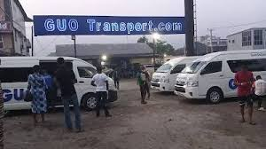

SHIPS:
We offer Maritime transport (or ocean transport)
or more generally waterborne transport,
is the transport of people (passengers) or goods (cargo) via waterways.
Freight transport by watercraft has been widely used throughout recorded history,
as it provides a higher-capacity mode of transportation for passengers and cargo than land transport,
the latter typically being more costly per unit payload due to it being affected by terrain conditions and road/rail infrastructures.

Guo Motors:
Experience safe, reliable, and comfortable inter-state travel with GUO Transport,
Nigeria’s trusted name in road transport.
Whether you’re commuting for business,
visiting family, or exploring new cities, our wide network of routes ensures you get to your destination with ease.
We operate daily trips connecting major cities and towns across Nigeria, including Lagos,
Abuja, Port Harcourt, Onitsha, Enugu, Owerri, Kano, and more.

Plane:
Arrive And Go Anywhere, Anytime.
Arrive Transportation Services,
gives you the best Experience on the Air while travelling,
Book your flights now, and get one of the best flights.
We have different routes,
taking you all over the word.
For luxiory We have a first, second, And a Third Class plane.
We give drinks and snacks on board.
feel free to Contact us now on our website and fill the application needed.

Buses:
Arrive Transportation Buses are large motor vehicles designed to carry many passengers,
typically on fixed routes for public transportation,
but also for charter or private use.
They serve as a vital part of public transit systems,
offering an affordable and collective way to travel.

Train:
We alo offer railway vehicles for transporting people and goods,
running on steel tracks to reduce friction for efficient travel.
They are powered by locomotives or self-propelled units,
with passengers and cargo housed in connected cars or wagons.

Pipelines:
Arrive Transportation Services,
have system of pipes for long-distance transportation of a liquid or gas,
typically to a market area for consumption.
Data from 2014 give a total of slightly less than 2.175 million miles of pipeline in 120 countries around the world.

HotAir Ballons:
Arrive Transportation hot air balloons is a lighter-than-air aircraft,
consisting of a bag, called an envelope,
which contains heated air.
Suspended beneath is a gondola or wicker basket,
which carries passengers and a source of heat,
in most cases an open flame caused by burning liquid propane.

Camels:
Arrive Transportation camel,3
is an even-toed ungulate in the genus Camelus that bears distinctive fatty deposits known as "humps" on its back.
Our Camels have long been domesticated and,
as livestock, they provide food and textiles.

bicycle:
Arrive transportation bicycles, also called a pedal cycle,
bike, push-bike or cycle, is a human-powered or motor-assisted,
pedal-driven, single-track vehicle,
with two wheels attached to a frame,
one behind the other.
A bicycle rider is called a cyclist, or bicyclist.
The bicycle was introduced in the 19th century in Europe.